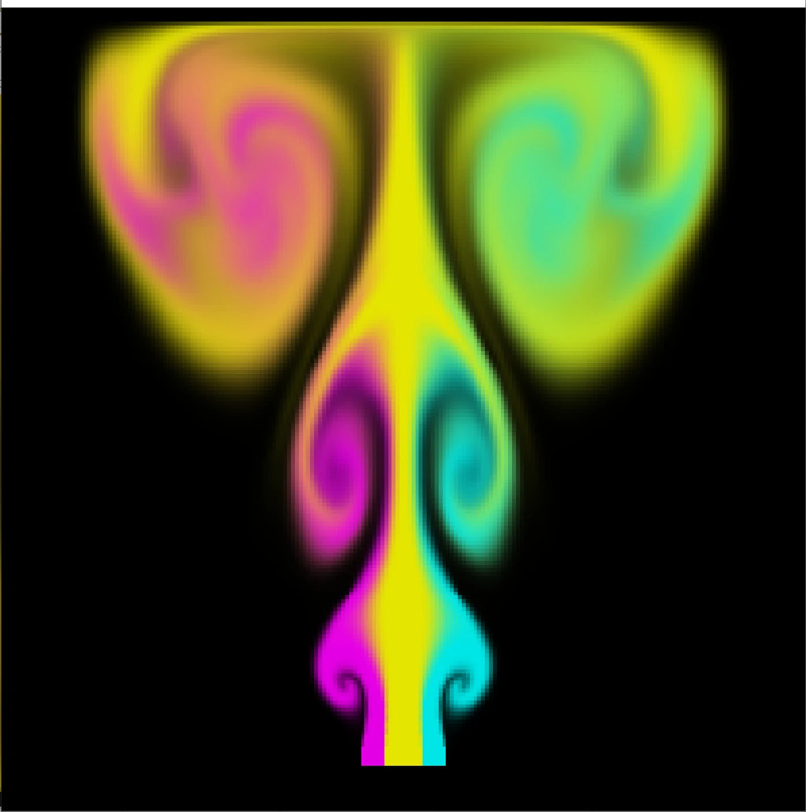
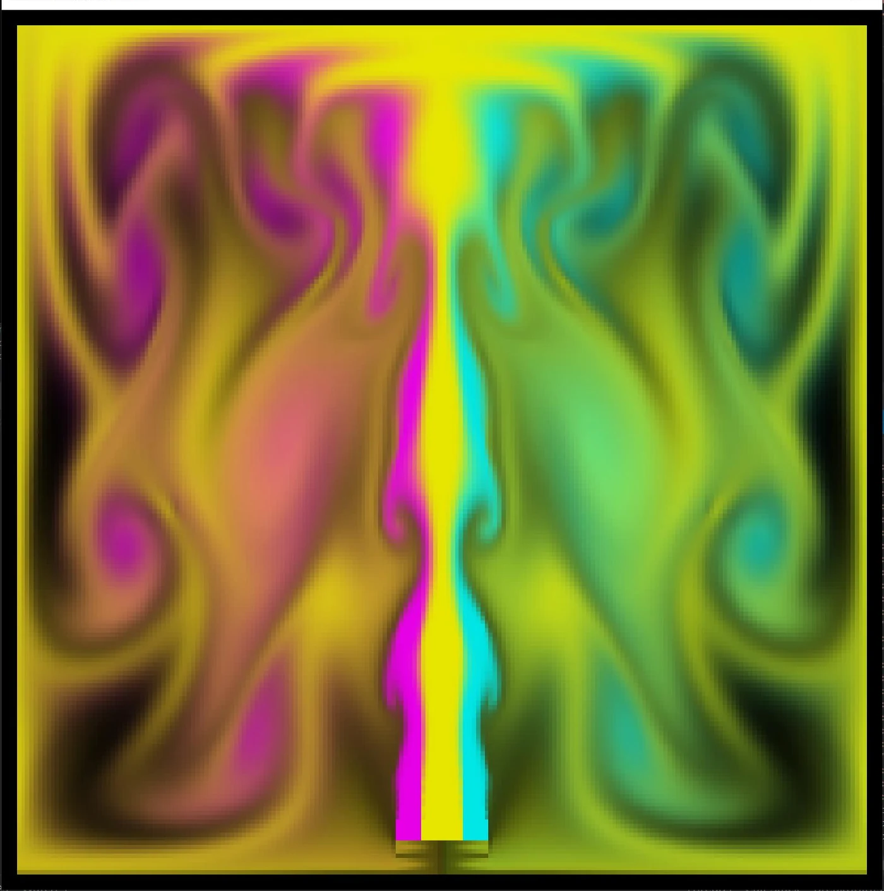
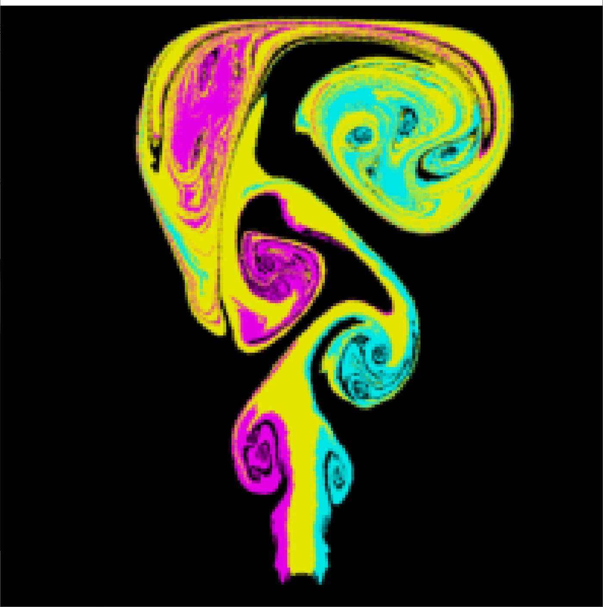
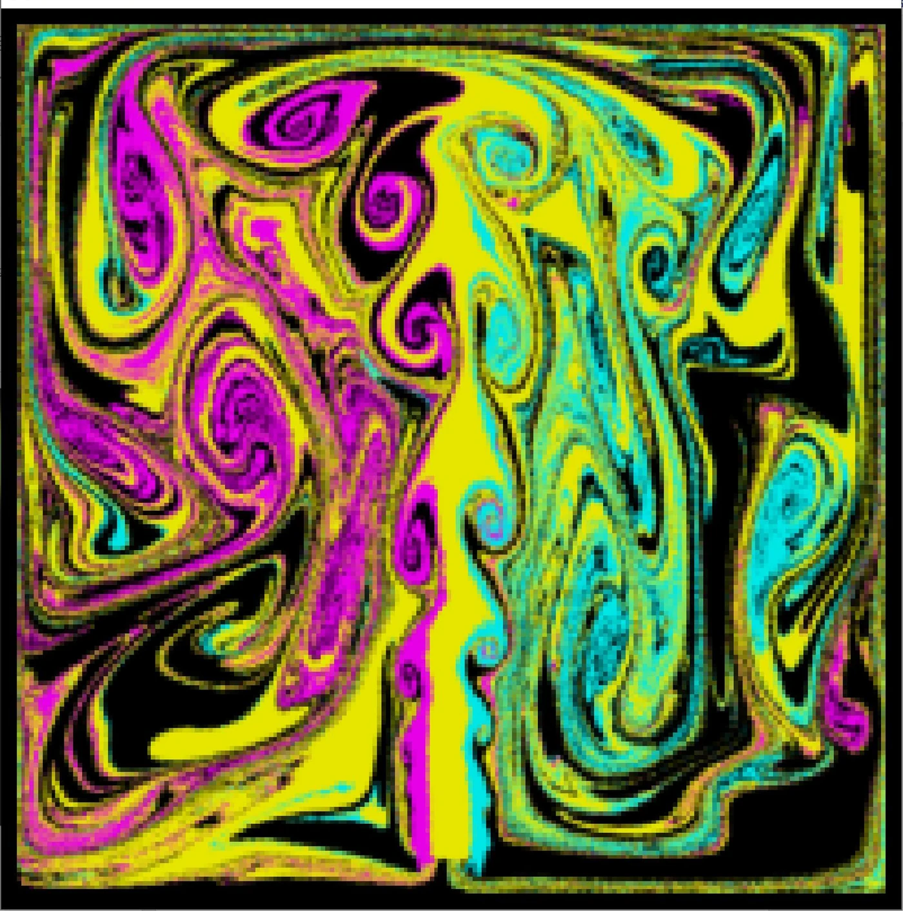

Initial Eulerian flow
Coloured ink is introduced into the fixed grid and begins to follow the simulated velocity field.
Fluid Dynamics · C++ · Numerical Simulation · Particle-Grid Methods
A two-stage fluid dynamics project developed in C++, beginning with a grid-based Eulerian solver and later extending it into a hybrid particle-grid simulator using PIC and FLIP velocity transfers.
This project was developed through two connected fluid simulation assignments. The first stage implemented a complete two-dimensional Eulerian fluid solver on a fixed regular grid.
The second stage retained the grid-based pressure solver while adding particles to carry velocity and colour information. This produced a hybrid PIC/FLIP simulation capable of preserving more detail and kinetic energy.
In the Eulerian formulation, fluid properties are stored at fixed grid locations. Velocity, ink, pressure and other quantities evolve inside a stationary two-dimensional domain.
Each simulation step performs emission, advection, external-force integration, viscosity and pressure projection.

Coloured ink is introduced into the fixed grid and begins to follow the simulated velocity field.

Advection and pressure projection create large smooth vortices throughout the fluid domain.
RGB ink and velocity are introduced through configurable source regions.
Fluid properties are transported through the velocity field using a semi-Lagrangian approach.
Gravity and other configurable forces modify the grid velocities.
Diffusion smooths velocity differences according to the selected dynamic viscosity coefficient.
A Poisson system is assembled and solved to obtain the fluid pressure.
The pressure gradient is subtracted from velocity to enforce incompressibility.
After advection and force integration, the velocity field may contain divergence. The projection stage calculates a pressure field that removes this divergence.
The pressure equation is represented as a sparse Poisson system and solved using a Preconditioned Conjugate Gradient solver.
Here, u* is the intermediate velocity, p is pressure, ρ is fluid density and Δt is the simulation time step.
The second stage extends the Eulerian solver with particles. Each particle carries position, velocity and colour information while the grid continues to handle pressure projection and boundary conditions.
This hybrid design combines the stability of a regular grid with the reduced numerical diffusion of particle-based transport.

Particles preserve local colour and velocity information as the emitted fluid enters the domain.

The hybrid simulation maintains smaller vortices and sharper structures as the flow develops.
Particles are sampled throughout the fluid domain, with multiple particles placed inside every grid cell. A small random offset avoids a perfectly regular distribution.
Particle positions are integrated using a midpoint Runge–Kutta method. Velocities are interpolated from the surrounding grid values.
Particles that leave the valid domain are projected back inside the simulation boundaries.
Particle properties are transferred to nearby grid locations using bilinear weights. Each particle contributes to the four closest grid points.
Separate accumulators store weighted values and total weights. Grid quantities are obtained by normalizing these accumulated contributions.
Particle velocities are distributed to the staggered velocity grid using distance-based interpolation weights.
RGB colour carried by the particles is reconstructed on the grid for visualization and further simulation steps.
After pressure projection, the corrected grid velocity must be transferred back to the particles.
PIC directly interpolates the new grid velocity. FLIP instead applies the change in grid velocity to the previous particle velocity, which better preserves energy.
The final blend uses mostly FLIP to preserve motion, with a small PIC contribution to improve stability.
| Method | Representation | Main behaviour |
|---|---|---|
| Eulerian | Fixed regular grid | Stable and smooth, but semi-Lagrangian advection introduces numerical diffusion and gradually removes small-scale details. |
| PIC | Particles transferred to and from a grid | Stable and resistant to noise, but repeated velocity interpolation can dissipate kinetic energy. |
| FLIP | Particles updated using grid velocity changes | Preserves energy and vortices more effectively, although the result can become noisier without a small PIC contribution. |
The first stage established the complete grid-based fluid simulation pipeline, including pressure projection and incompressibility. The second stage reused this solver while replacing grid-based advection with particle transport and PIC/FLIP velocity updates.
The two implementations are presented separately to show the progression from a purely Eulerian solver to the final hybrid particle-grid simulator.